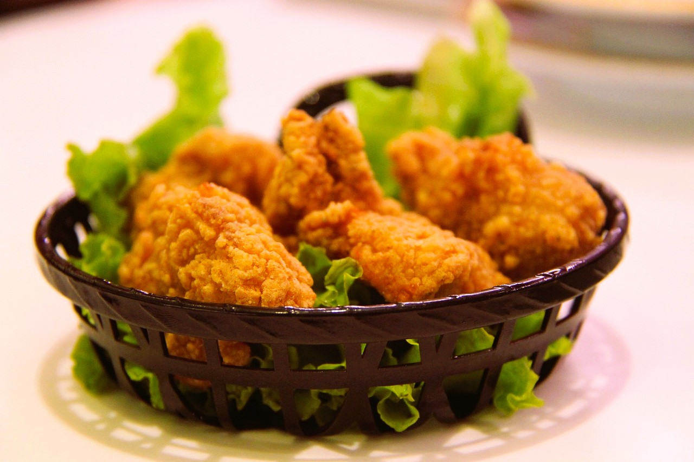

FRIED CHICKEN

Description
Indulge in the ultimate comfort food with this crispy and juicy fried chicken recipe. Perfectly seasoned and golden-brown,
each bite offers a delightful crunch and flavorful tenderness that will leave you craving more.
Ingredients
- 4 chicken drumsticks
- 4 chicken thighs
- 2 cups buttermilk
- 2 cups all-purpose flour
- 1 teaspoon salt
- 1 teaspoon black pepper
- 1 teaspoon paprika
- 1 teaspoon garlic powder
- 1 teaspoon onion powder
- 1/2 teaspoon cayenne pepper (optional)
- 1 teaspoon baking powder
- Vegetable oil (for frying)
Steps
- In a large bowl, combine the chicken drumsticks and thighs with the buttermilk. Cover and refrigerate for at least 4 hours or
overnight for best results.
- In another bowl, mix the flour, salt, black pepper, paprika, garlic powder, onion powder, cayenne pepper (if using), and baking
powder.
- Remove the chicken pieces from the buttermilk, letting any excess drip off. Dredge each piece in the seasoned flour mixture,
ensuring an even coating. For extra crispy chicken, repeat the process: dip the coated chicken back into the buttermilk and then
into the flour mixture again.
- Pour vegetable oil into a large, heavy-bottomed pot or deep fryer, filling it to about 1/3 full. Heat the oil
to 350°F (175°C).
- Carefully place the coated chicken pieces into the hot oil, making sure not to overcrowd the pot. Fry the chicken in batches
if necessary. Cook for about 12-15 minutes, turning occasionally, until the chicken is golden brown and crispy and the internal
temperature reaches 165°F (74°C).
- Remove the fried chicken from the oil and place it on a wire rack or paper towels to drain excess oil.
- Let the fried chicken rest for a few minutes before serving to allow the coating to set. Enjoy your crispy, juicy
fried chicken!